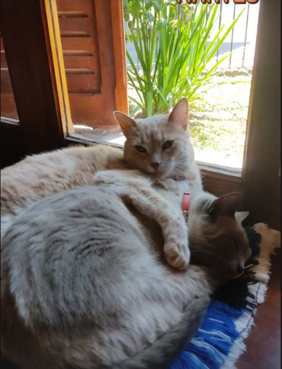
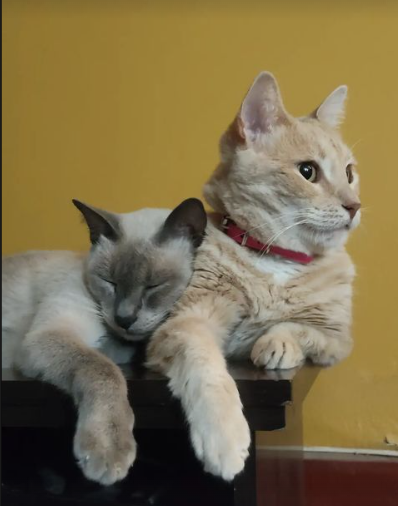
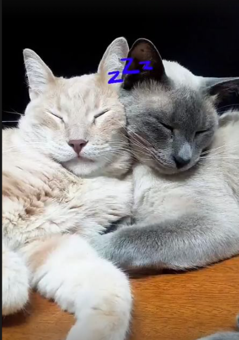

Un pequeño resumen de mis gatos:
Siggy nació en 2017 en Zavalla y es una gata de color anaranjado con una personalidad curiosa y encantadora. Desde que llegó a casa, se ha ganado el corazón de todos con su afán por explorar cada rincón. Siempre encuentra nuevos lugares para esconderse o simplemente disfrutar de un buen baño de sol. Aunque es muy independiente, no duda en buscar compañía cuando quiere un momento de afecto. Su agilidad la convierte en una cazadora nata, persiguiendo cualquier cosa que se mueva, ya sean juguetes o insectos que se cuelan por la ventana. Además, le encanta relajarse en las zonas más cálidas de la casa, donde suele tomar largas siestas.
Tomy, por su parte, llegó a la familia en 2018. Este gato siamés es conocido por su elegante pelaje y sus brillantes ojos azules. Le gusta trepar a las alturas y observar todo lo que sucede desde su "trono", como si fuera el guardián de la casa. A pesar de ser algo independiente, Tomy es muy leal y disfruta acurrucarse en lugares suaves y cálidos. Es muy comunicativo, utilizando su melodioso maullido para expresar lo que quiere, ya sea comida, atención o simplemente compañía. Aunque comparte la casa con Siggy, cada uno tiene su propio espacio y sus propias rutinas, pero ambos disfrutan de la convivencia y de los momentos de calma.
A pesar de sus diferencias, Siggy y Tomy han desarrollado una relación única con el tiempo. Aunque al principio eran algo distantes, hoy en día es común verlos compartir momentos juntos, ya sea tomando una siesta en el mismo sofá o explorando la casa en busca de algo interesante. Siggy tiende a ser la más aventurera, mientras que Tomy prefiere observar desde una distancia prudente, pero en muchas ocasiones, ambos terminan uniéndose en juegos o en la búsqueda de un rayo de sol donde acurrucarse. Su presencia en la casa trae un equilibrio perfecto entre energía y serenidad.